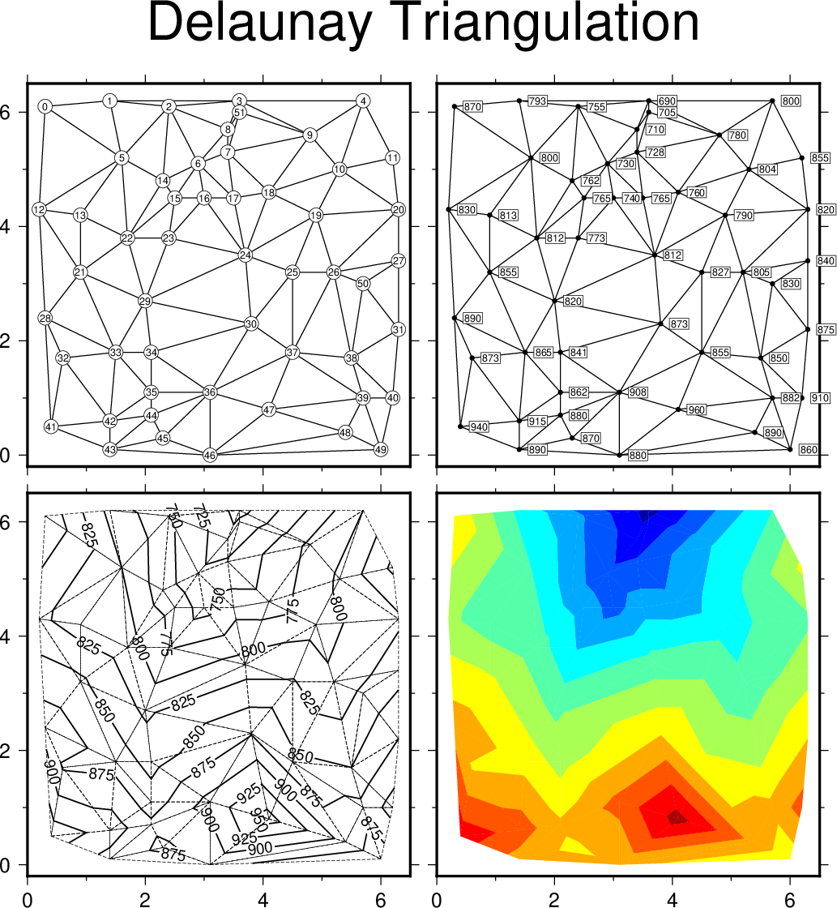

(12) Optimal triangulation of data¶
Our next example operates on a data
set of topographic readings non-uniformly distributed in the plane
(Table 5.11 in Davis: Statistics and Data Analysis in Geology, J.
Wiley). We use triangulate to
perform the optimal Delaunay triangulation, then use the output to draw
the resulting network. We label the node numbers as well as the node
values, and call contour to make a
contour map and image directly from the raw data. Thus, in this example
we do not actually make grid files but still are able to contour and
image the data. We use the CPT topo.cpt (created via
gmtinfo and makecpt). The script becomes:
#!/usr/bin/env bash
# GMT EXAMPLE 12
#
# Purpose: Illustrates Delaunay triangulation of points, and contouring
# GMT modules: makecpt, gmtinfo, contour, text, plot, triangulate, subplot
# Unix progs: rm
#
gmt begin ex12
# Contour the data and draw triangles using dashed pen; use "gmt gmtinfo" and "gmt makecpt" to make a
# color palette (.cpt) file
T=`gmt info -T25+c2 @Table_5_11.txt`
gmt makecpt -Cjet $T
gmt subplot begin 2x2 -M0.05i -Fs3i/0 -SCb -SRl -R0/6.5/-0.2/6.5 -Jx3i -BWSne -T"Delaunay Triangulation"
# First draw network and label the nodes
gmt triangulate @Table_5_11.txt -M > net.xy
gmt plot net.xy -Wthinner -c0,0
gmt plot @Table_5_11.txt -Sc0.12i -Gwhite -Wthinnest
gmt text @Table_5_11.txt -F+f6p+r
# Then draw network and print the node values
gmt plot net.xy -Wthinner -c0,1
gmt plot @Table_5_11.txt -Sc0.03i -Gblack
gmt text @Table_5_11.txt -F+f6p+jLM -Gwhite -W -C0.01i -D0.08i/0i -N
gmt contour @Table_5_11.txt -Wthin -C -Lthinnest,- -Gd1i -c1,0
# Finally color the topography
gmt contour @Table_5_11.txt -C -I -c1,1
gmt subplot end
gmt end
#
rm -f net.xy

{kind=link}
Optimal triangulation of data.